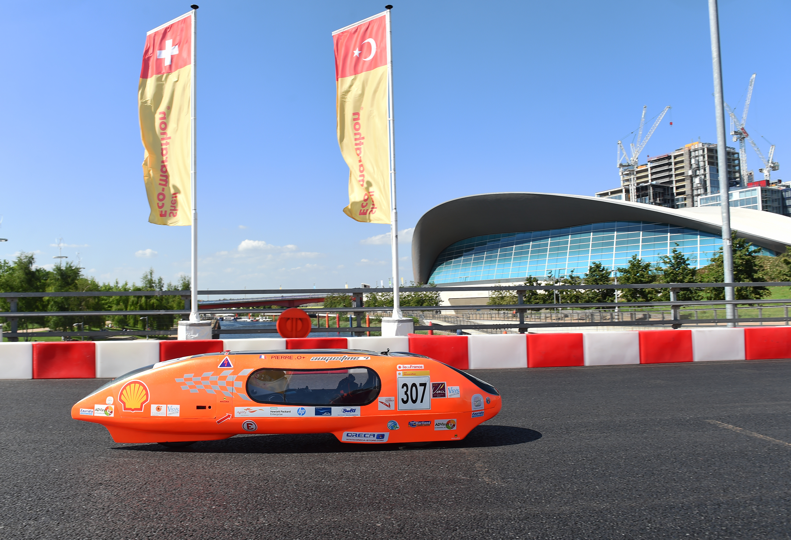
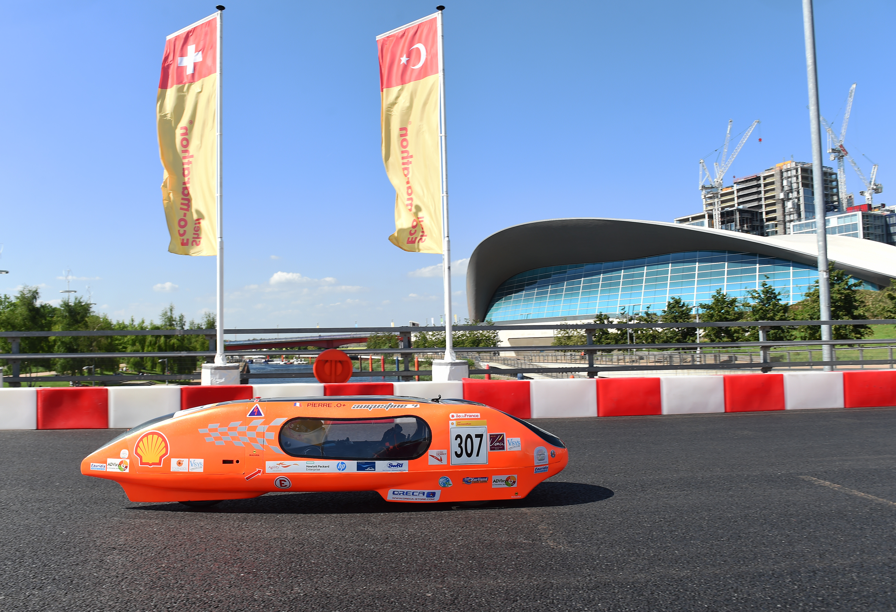

La génèse :
Notre 1er véhicule monocoque et avec une structure entièrement en carbonne. Ce véhicule a été élaborée durant la session universitaire 2013-2014. Elle a posé ses roues sur un circuit à l'occasion de notre participation au challenge Educ'Eco de 2014. En cette occasion, notre véhicule fût primée de nombreuses …
 
